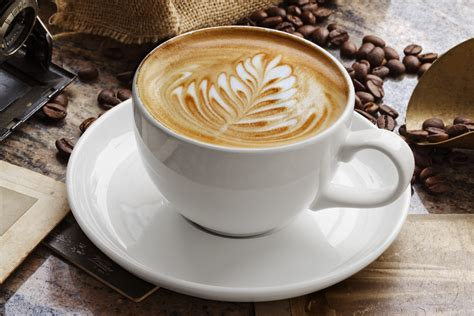
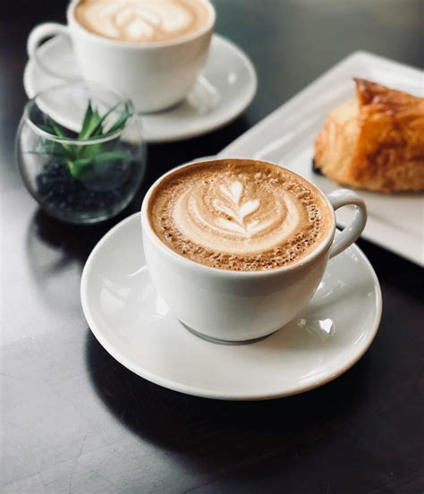
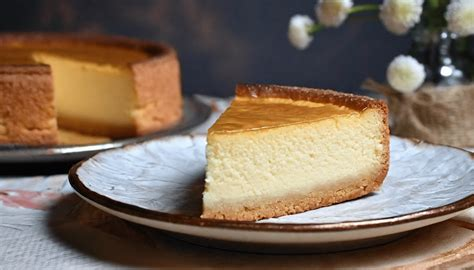

Kaffeespezialitäten

Vom Espresso bis zum Latte Macchiato - wir verwenden nur Fair-Trade Bohnen.
Gönnen Sie sich eine frische Tasse Kaffee und holen Sie sich Ihren Koffeinkick. Ihr gemütlicher Rückzugsort in der Rosenstadt.
Get Started ➝
Genießen Sie unsere Auswahl an frisch geröstetem Kaffee und hausgemachten Leckereien.

Vom Espresso bis zum Latte Macchiato - wir verwenden nur Fair-Trade Bohnen.

Täglich frisch nach traditionellen Rezepten gebacken.
Seit über 10 Jahren sind wir fester Bestandteil der Zweibrücker Innenstadt.
Unser Team legt Wert auf regionale Zutaten und eine familiäre Atmosphäre.